Accelerate Speed to Market
- Faster design and Engineering cycles
- Drive down defects through retested, reusable components
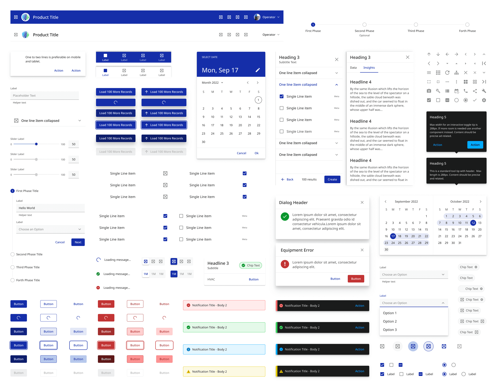
Element Design System Overview
Built a scalable design system from the ground up to unify Johnson Controls' global digital products. EDS provides a comprehensive library of components, patterns, and code snippets, accelerating speed-to-market and ensuring a consistent UX/UI language across web applications.
My Responsibility
[UNDER NDA] This project is protected by confidentiality agreements, but I would be happy to walk you through my process and the outcomes in a private interview for more details
Contact MeGoal: Enhance market agility, and establish a cohesive UX across the digital ecosystem to amplify brand presence, increase product adoption, and accelerate development speed.
Context: While JCI established a physical product design language in 2018, it lacked a unified digital counterpart.
Challenge: Fragmented digital standards and siloed product teams led to a diluted master brand, with inconsistent UI components and patterns across the portfolio.
Context: While JCI established a physical product design language in 2018, it lacked a unified digital counterpart.
Challenge: Fragmented digital standards and siloed product teams led to a diluted master brand, with inconsistent UI components and patterns across the portfolio.
* Ambiguous visual representation for confidentiality
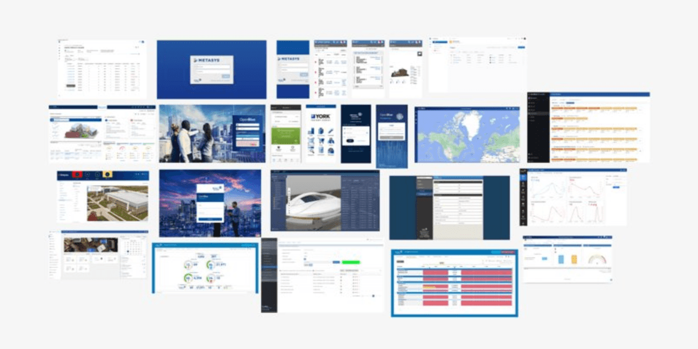
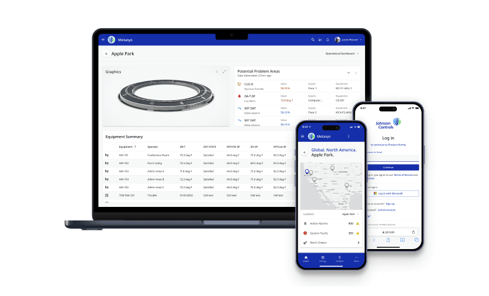
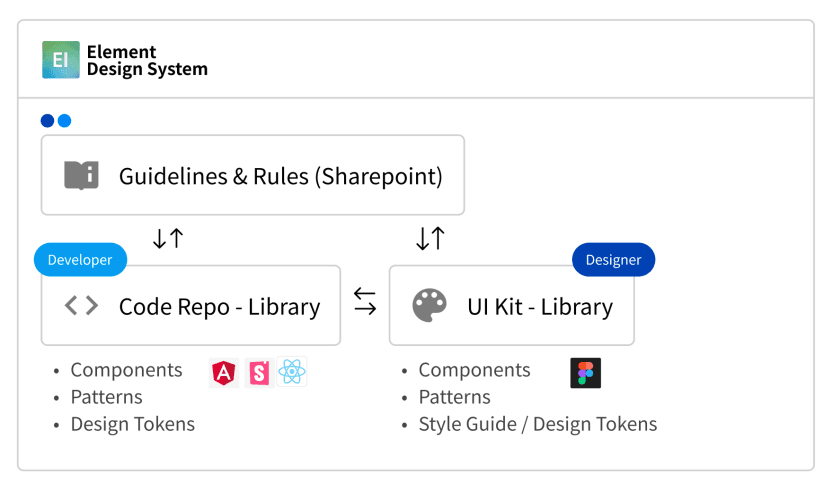
Design Side: Increase our market speed, share current digital best practices, and create a unified look & feel experience throughout the Johnson Controls digital ecosystem, leading to less training and increased product adoption.
Develop Side: Faster development time and reduced bug fixing.
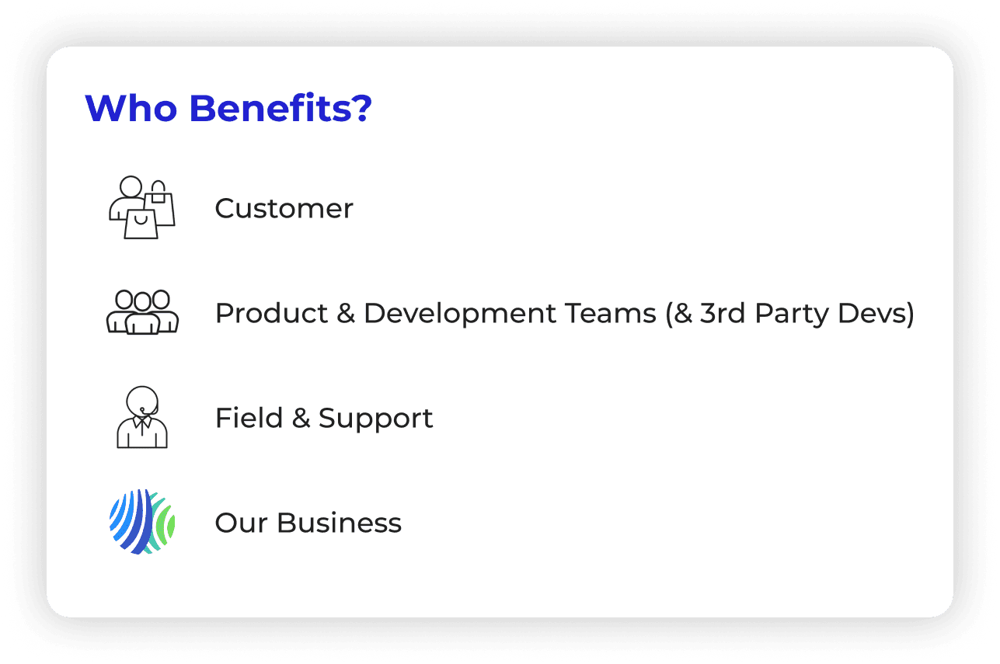
Login is frequently the first time a user interacts with a product, setting the tone for their entire experience. At Johnson Controls (JCI), while physical products shared a robust design language, the digital ecosystem remained fragmented.
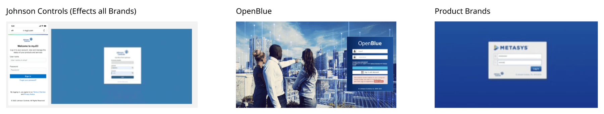
Designing a global authentication framework required navigating complex business requirements and user experience friction.
Excessive Friction: When the login pattern includes too many fields, choices, or steps, users are more likely to hesitate or drop off.
Inconsistent Patterns Across Apps: When products implement login and recovery differently, users see different steps, errors, and terminology.
Lower Completion Rates: Extra friction can reduce sign-in completion, especially for first-time or infrequent users.
More Password/Access Issues: More lockouts and resets can lead to more support requests and longer time to access the product.
Ambiguous Entry Choices: Generic labels like “Sign in” and “Sign up,” or presenting multiple auth options at once, forces users to decide before they understand the context.
Information Overload: Showing all fields and SSO options simultaneously increases scanning effort and makes the “right next step” unclear.
Wrong-path Errors: Users choose the wrong method (JCI password vs. SSO), hit dead ends, and restart—driving frustration and abandonment.
Decision Delay: Extra thinking time slows the login journey and increases drop-off under time pressure.
One-size-fits-all Standardization: Forcing a single layout and visual treatment across all products can under-serve flagship experiences and customer expectations.
Unbounded Customization: Letting every team freely customize login creates design drift, longer QA cycles, and harder-to-maintain components.
Inconsistent Brand Presence: The ecosystem feels fragmented; users may question legitimacy when the login experience looks different across products.
Operational Overhead: Without clear guardrails (tokens, slots, ownership), customization becomes expensive and slows down product teams.
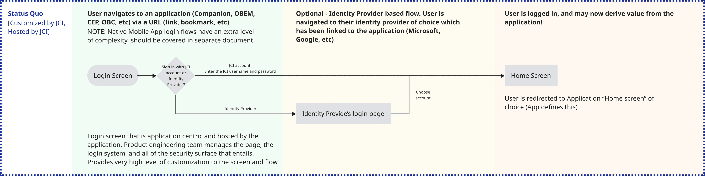
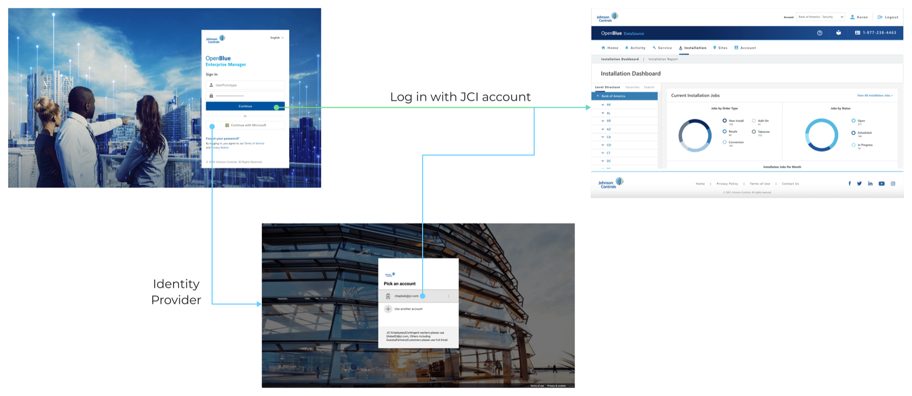
👆 Current Log in Flow 👆
01
How might we reduce duplicated implementation and support burden from app-owned login flows while keeping sign-in success high?
02
How might we guide users to the correct sign-in path on the first try to reduce drop-off and speed up time-to-access?
03
How might we support product/customer branding needs in login without increasing variant complexity and slowing down delivery?
We seized the chance to upgrade the messy, decentralized backend architecture by introducing a standardized frontend interface.
We leveraged the redesign as the perfect vehicle to roll out Okta's Single Sign-On (SSO) service enterprise-wide, transitioning from fragmented logins to a unified gateway.
By establishing one source of truth, we had the opportunity to stop 34+ product teams from reinventing the wheel, drastically reducing global tech debt.
Align the digital entry point seamlessly with JCI's overall brand aesthetics and physical product language.
Optimize the delicate trade-off between enforcing robust enterprise security and providing frictionless user convenience.
Flexibly scale across different product weights (flagship vs. sub-products), diverse user types, and multi-device breakpoints.
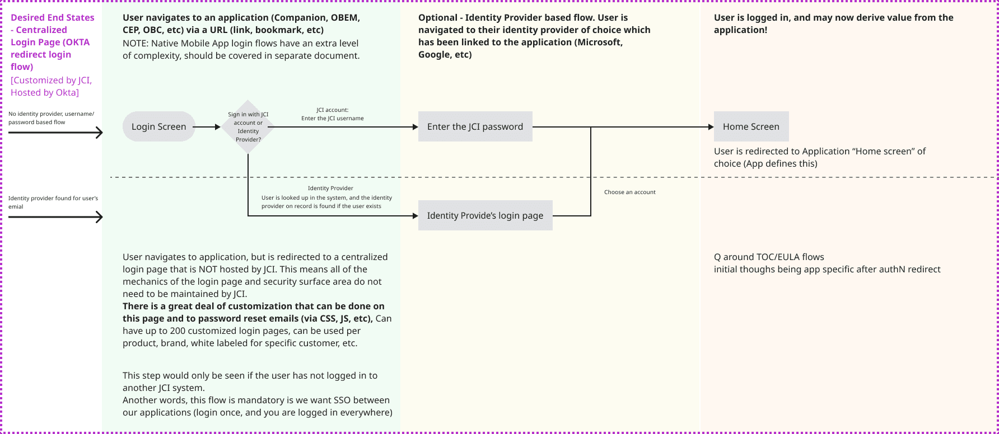
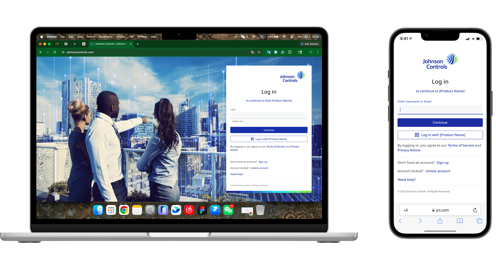
To meet the diverse security and user experience needs across JCI's massive product portfolio, we defined three core authentication strategies within the design system:
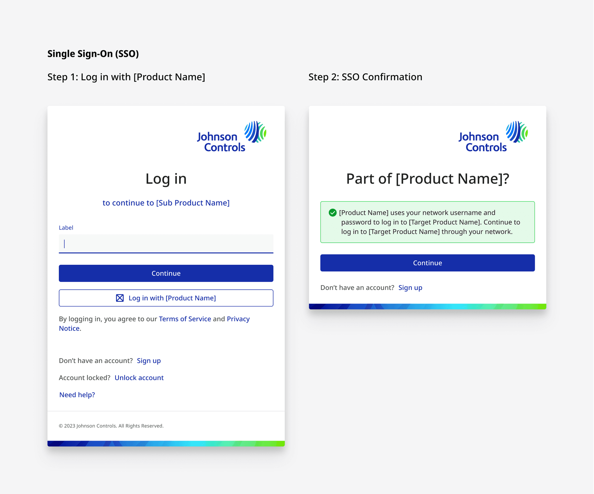
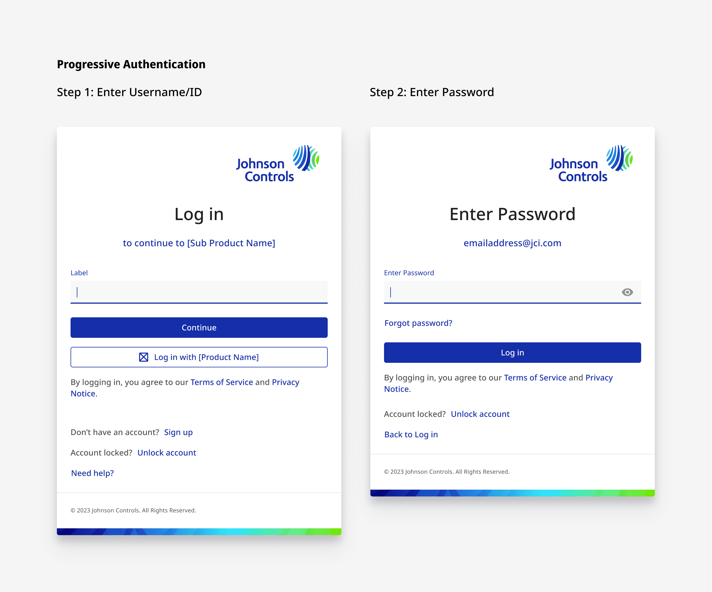
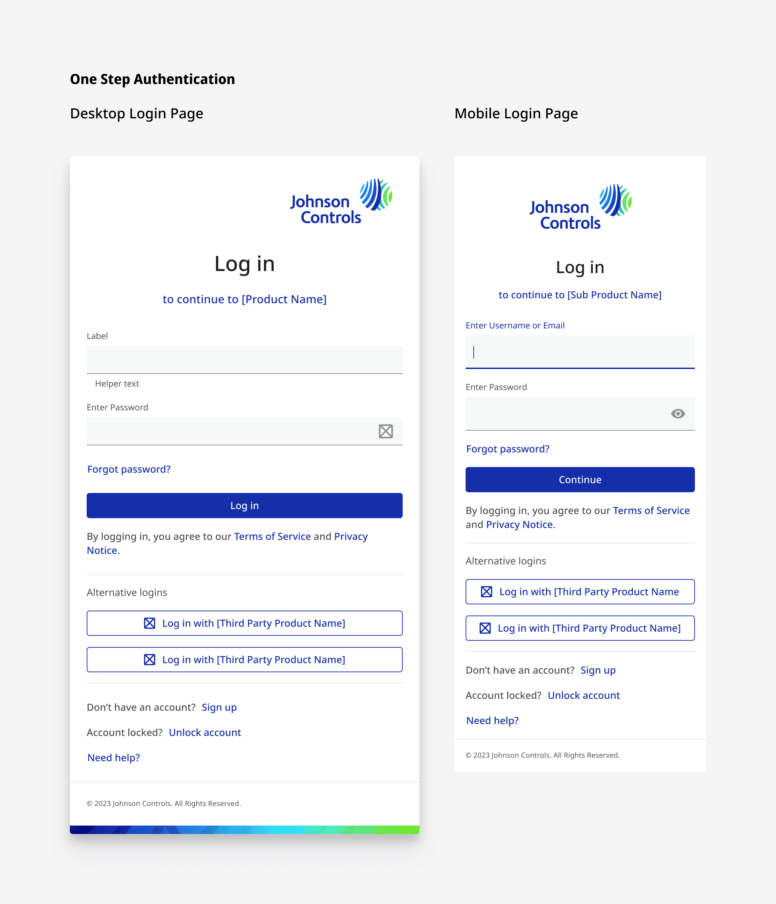
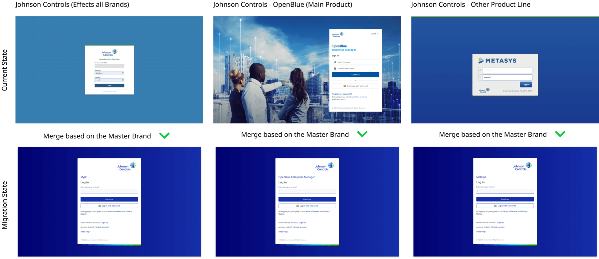
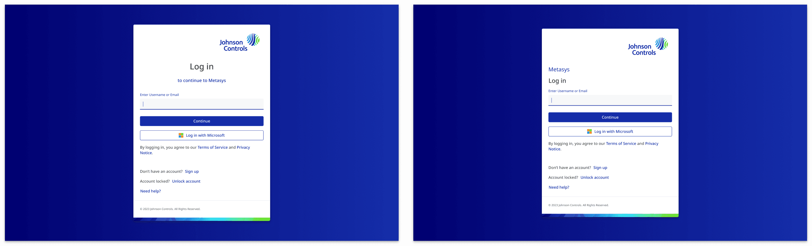
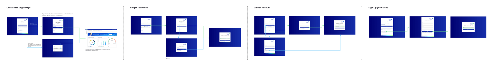
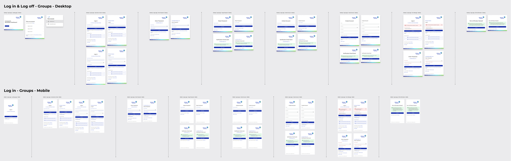
As a foundational pillar of the Global EDS, this centralized login framework drove enterprise-wide alignment and contributed to significant overall savings.